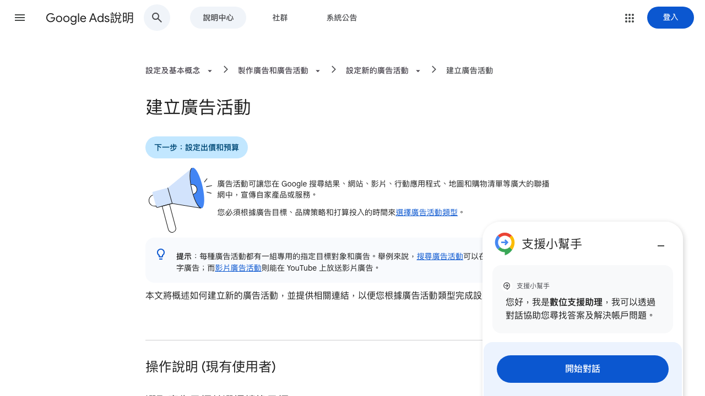
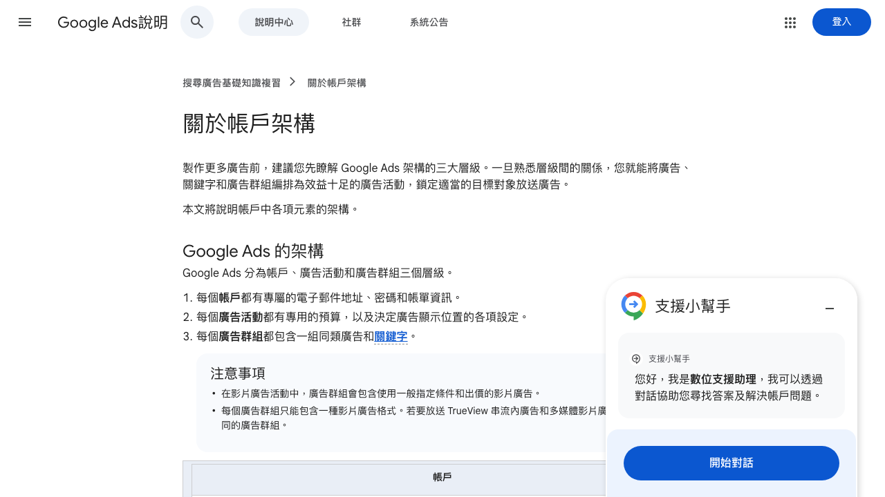
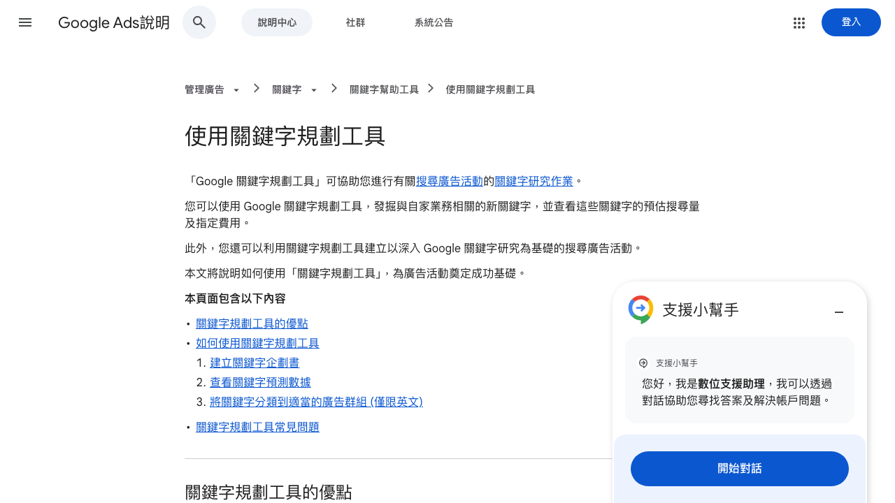
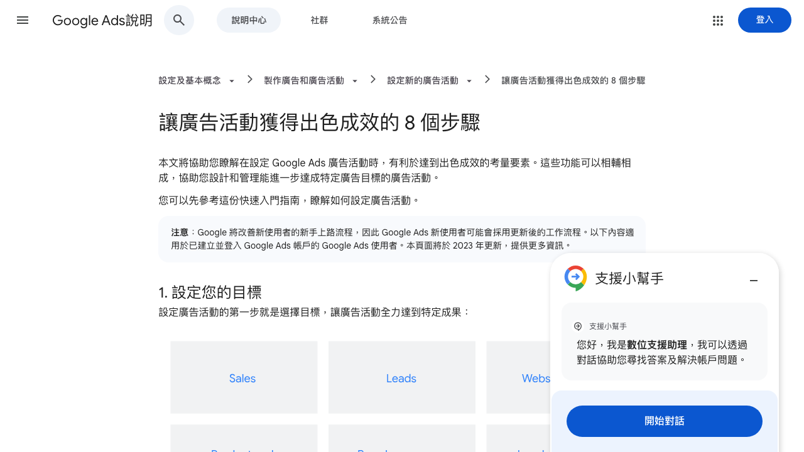
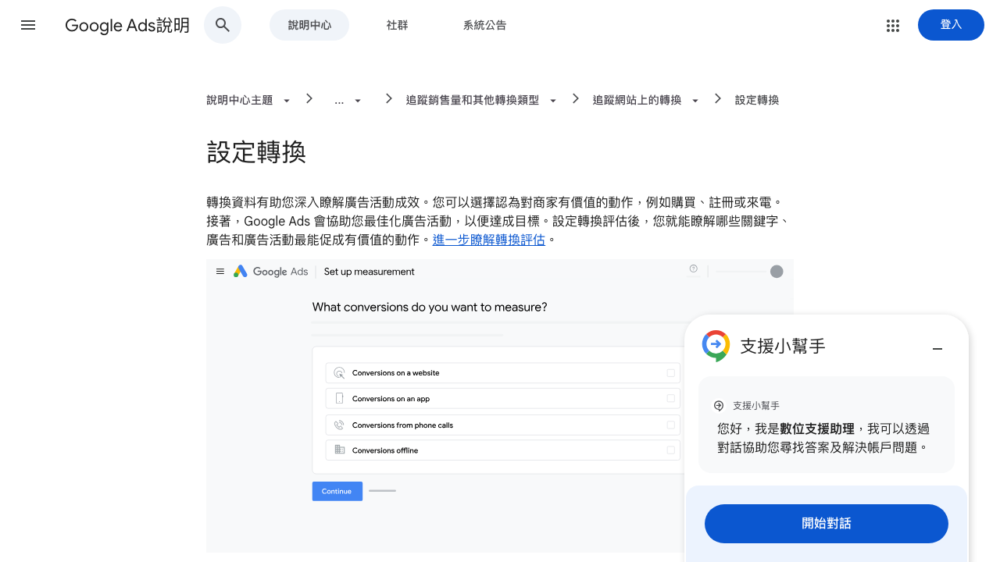

GOOGLE ADS STAFF TRAINING
Google Ads 介紹與
系統操作教學
這份是給 內部員工訓練 的 Google Ads 入門教材：從帳戶結構、廣告活動邏輯、關鍵字、預算、指定目標到轉換追蹤，先建立一套共同語言與基本操作觀念。
主題：Google Ads用途：員工訓練教材版本：2026-05
先懂架構再懂操作最後看成效
這份是給 內部員工訓練 的 Google Ads 入門教材：從帳戶結構、廣告活動邏輯、關鍵字、預算、指定目標到轉換追蹤，先建立一套共同語言與基本操作觀念。
花出去的錢有沒有換到詢價、訂單、來電、到站流量或品牌曝光。
今天該改什麼：廣告活動設定、關鍵字、素材、指定目標、預算、轉換。
有沒有建立可交接、可追蹤、可複製的廣告管理流程，而不是只靠單一個人經驗。
Google Ads 讓公司能在 Google 搜尋結果、網站、YouTube、地圖、購物清單與 App 等管道放送廣告。
官方文件明確把它拆成搜尋、多媒體、影片、購物、需求開發、應用程式、地區、最高成效等不同類型。
先選商業目標，再選廣告活動類型，接著才是預算、出價、受眾、素材與優化。

帳號、登入權限、帳單資訊都在這層。這一層比較像總管控中心。
每個活動有自己的目標、預算、投放位置與策略，像是一個完整專案。
把同主題的廣告和關鍵字放在一起，讓訊息與搜尋意圖更一致。
Google 官方「關於帳戶架構」和「廣告群組運作原理」都強調：先把層級分清楚，後面優化才不會亂成一團。

官方建議按產品、服務或共同主題分組，例如甜點、飲料、點心各自一組。
因為同一組內的關鍵字與廣告越接近，廣告訊息越容易對應到使用者需求。
不要把完全不同商品硬塞進同一個廣告群組，不然後面很難寫出精準文案，也很難優化。
例如網站流量、待開發客戶、銷售、來店、品牌曝光。
搜尋、多媒體、影片、購物、最高成效等，決定廣告出現在哪裡。
控制日花費與優化方向，例如盡量爭取點擊或轉換。
整理關鍵字、文案、素材與指定條件，最後再發布。
沒想清楚目標就先選類型，結果用曝光型工具去追立即成交，或用成交型活動去做純品牌曝光。
先問要流量、名單、訂單還是曝光，再決定要開哪種活動。

找新關鍵字、看預估搜尋量、估費用、篩選關鍵字、建立搜尋廣告活動企劃。
從「工具 → 規劃 → 關鍵字規劃工具」進入，可用「尋找新的關鍵字」或「取得搜尋量和預測」。
關鍵字規劃工具是拿來幫你縮小方向，不是保證成效；出價、地區、預算、廣告品質都會影響真實結果。
Google 官方定義是整個月每天願意支付的平均金額，不代表每天都一定剛好花到那個數字。
流量高或系統預估更有機會帶來成效的日子，花費可能高於平均；但月支出仍有上限邏輯。
若月預算固定，可先用月金額 ÷ 30.4 算出平均每日預算，再依活動重要性分配。
預算決定你能跑多大；出價策略決定系統優先幫你爭取點擊、轉換還是轉換價值。兩者不能混為一談。
可依背景、興趣、習慣、正在研究的主題、曾互動過的使用者來觸及。
可透過主題、刊登位置、內容關鍵字等方式，決定廣告出現在哪些內容附近。
指定目標不是越多越好；太窄會沒量，太寬會浪費。要依活動目的做取捨。


如果沒有轉換資料，你只看得到點擊和流量，卻不知道哪個關鍵字、廣告、活動真的帶來價值動作。
可追蹤網站轉換、App 轉換、來電轉換、離線轉換，也能搭配 Analytics 看跨管道成效。
公司內部一定要先定義什麼叫「轉換」：詢價送出、下單、加 LINE、來電、預約，都可能不同。
先定義要什麼成果。
讓廣告出現在對的位置。
先決定可承受花費。
決定優化方向。
讓廣告更完整、更吸睛。
把相似主題整理在一起。
定義誰會看到廣告。
讓優化建立在真實成效上。
建議主力放在 搜尋廣告：鎖定「防蚊代工、植萃清潔代工、寵物洗護代工、OEM、ODM、客製配方、工廠直營」這種高意圖字詞，導到詢價頁或需求單，不要把預算先丟在大範圍曝光。
若是富盛豐自有商城商品，則適合拆成 品牌詞 + 品類詞 + 再行銷，例如防蚊、除臭、清潔、植萃洗護，並分開看哪條產品線的轉換效率最高。
富盛豐目前最適合拆的廣告群組／活動主軸，可優先分成：天然防蚊、居家清潔、除臭抑菌、寵物洗護，不要所有產品混在同一個活動裡。
富盛豐 OEM 線的轉換不能只看點擊，建議至少追：詢價表單送出、LINE 洽詢、電話撥打、Email 聯繫。這樣才知道哪種關鍵字真的帶來商機。
OEM 線先用搜尋廣告打高意圖詢價字詞；商城線再用品牌詞、品類詞與再行銷承接。若後面素材與數據夠，再擴到最高成效與 YouTube / Display 做放大，而不是一開始就全面亂鋪。
毛天使目前最強的是 防蚤驅蟲 / 外出防護，其次才是除臭、洗護與局部保養。所以廣告主軸應優先圍繞蚊蟲季、散步、戶外、夏季防護、多毛孩家庭這些情境。
建議至少拆成：品牌詞活動、防蚤驅蟲主力活動、除臭 / 洗護品類活動、再行銷活動。若商品 feed 與追蹤完整，可再考慮購物 / PMax 承接電商轉換。
文案不要只講「天然」，要更貼近飼主決策：低敏、安心、外出防護、居家可用、毛孩不排斥、成分透明。這些比空泛品牌口號更容易帶來點擊與購買。
毛天使應追網站購買、加入購物車、開始結帳、加 LINE / 客服、回購人群。對 C 端品牌來說，再行銷和季節檔期會非常重要。
毛天使最適合把 Google Ads 當成「抓有需求的飼主 + 用再行銷把猶豫客追回來」的系統。尤其防蚤驅蟲線很適合在春夏蚊蟲季做預算加碼，效率通常會比平均時段更好。
確認廣告有沒有停投、預算有沒有爆、點擊或轉換是否突然異常。
檢查關鍵字、素材、搜尋字詞、受眾與轉換來源，做小幅調整。
比較各活動花費與成果，調整預算分配與主打方向。
重整活動架構、命名規則、追蹤項目與交接文件。
流量好看不等於生意有變好。
商品、文案、關鍵字混雜，導致廣告不夠精準。
每個活動都開一點，最後每個都跑不動。
長期不整理搜尋字詞與排除條件，浪費錢很快。
人一換就斷線，沒人知道活動為什麼這樣設。
每次調整都要留下一句說明：改了什麼、為什麼改、期待看到什麼結果。
看的是預算是否換到生意結果，不是只看曝光或點擊。
先懂結構、目標、關鍵字、預算與轉換，再進去調整功能。
把 Google Ads 做成有 SOP、有追蹤、有交接的系統，才不會永遠只靠個人經驗操作。
內部提醒：本簡報之對外路徑、下載位置與內部整理入口不直接展示於頁面中；如需存取，請由內部指定管理窗口統一控管。
資料來源：Google Ads 官方說明中心〈建立廣告活動〉、〈關於帳戶架構〉、〈廣告群組運作原理〉、〈使用關鍵字規劃工具〉、〈平均每日預算簡介〉、〈為廣告指定目標〉、〈設定轉換〉、〈讓廣告活動獲得出色成效的 8 個步驟〉。